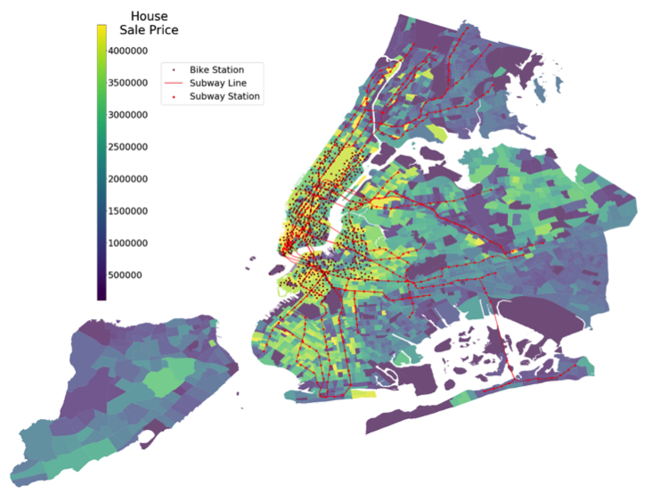
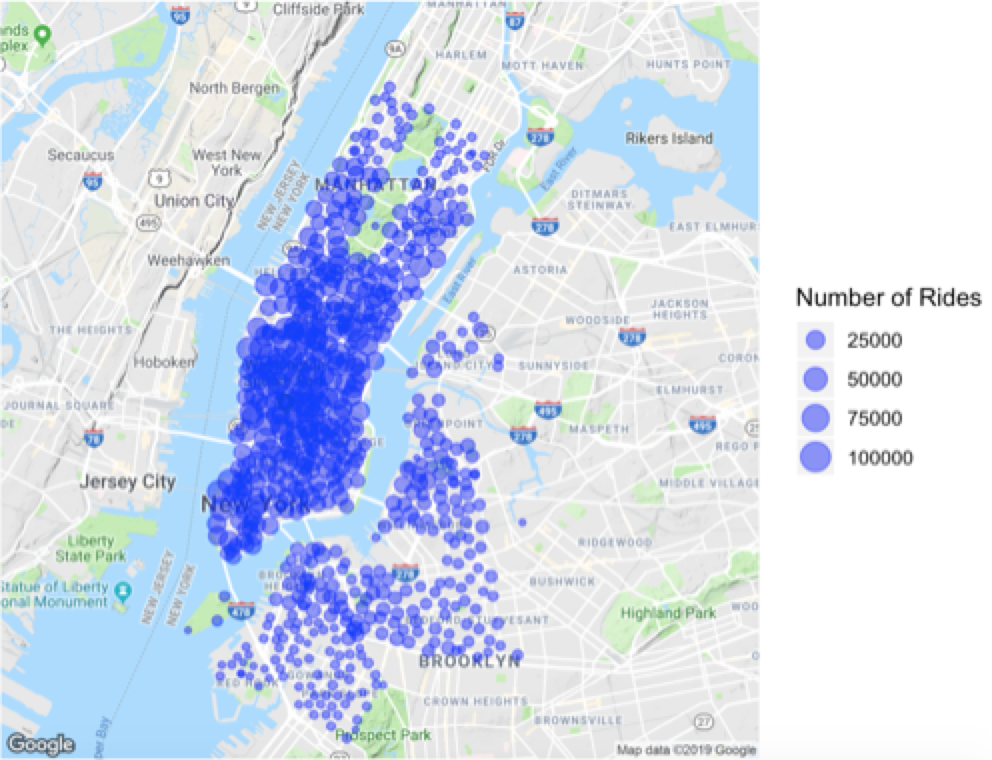
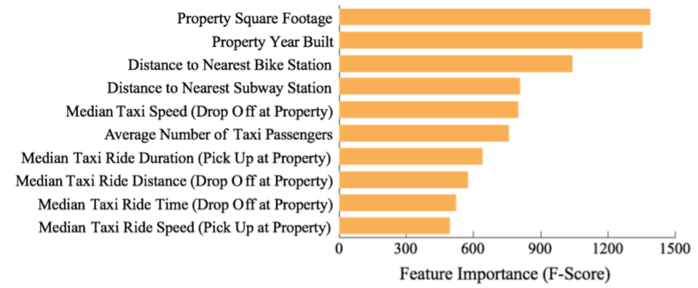

An ABM Approach to Addressing the Opioid Crisis: How can we predict the effects of public health intervention on a unique community of pain patients?
The Influence of Transportation Accessibility on Property Value
Location, location, location! Real estate value is determined by numerous factors, but location is often touted as one of the most telling. In dense, urban areas where personal vehicles are less common, property location is intrinsically tied to transportation access. But exactly how influential is transportation accessibility in real estate value?
To answer this question, we explore the effects of transportation access on housing prices in New York City using subway, bike share, taxi and Uber data. A random forest approach identified highly influential features in predicting real estate price, including proximity to subway and bike share stations.
Contributors to this project include Viggy Kumaresan, Azucena Morales, Yifei Wang, and Sicong Zhao.
What does transportation have to do with housing prices?
For the first time in human history, more humans live in cities than in rural areas. This urbanization movement has had many dramatic effects on city life, including a rise in housing demand as well as an increasing reliance on public transportation [1]. Today, in dense cities like New York City, transportation availability is considered an ever-important factor in selecting a place to live. However, many others features also come into consideration such as unit size, amenities, proximity to landmarks, and safety.
From a quantitative standpoint, exactly how valuable are different transportation methods in an urban property? Using residential property sale price as a proxy for value, we can attempt to answer this question. By integrating features of housing proximity to the Metropolitan Transit Authority (MTA) and bike share stops as well as Taxi and Uber data we are able to predict NYC housing prices and ultimately better understand the impact of each transportation channel on property value. The results of this analysis have implications for the urban planners and real estate developers through quantification transportation services perceived value.
Previous Research
Previously, researchers have developed machine learning models to predict housing prices using various neighborhood features, such as crime rate, local business presence, and access to highways [2]. In recent years, as more urban data has become available, researchers have improved these models by integrating additional data sources such as local census data and education profiles [3]. In regards to transportation specifically, increased accessibility has been shown to increase housing prices, due to the decrease in commuting costs for both tenants as well as landlords. On the other hand, there are also negative effects of transportation such as noise, traffic, pollution, and crime that can have potentially negative effects on house value [4].
Industry Disruption
Nowadays, there are more options for mobility in cities apart from subway transportation. Services such as Uber, Lyft, and Citi Bike are changing the way people transport daily. Because New Yorkers can now carpool into Manhattan for just a few dollars, many of residents are rethinking their priorities as homebuyers [5]. Buyers who do not live close to a subway station, have found alternatives in these services. This industry disruption does not mean that traditional public transportation is being replaced, but instead that a wider, holistic transportation system may begin to affect real estate property value.
Take bikeshares for example. Once introduced into a metropolitan area, individuals’ transportation options and preferences are subject to change. Among Capital Bikeshare riders, 70% choose bikeshare to get to their destination as the quickest and easiest way. Moreover, bike sharing systems offer benefits such as decreased carbon dioxide emissions, traffic congestion, accident rates and construction costs [6]. Research has shown that the effects of bikeshare introduction do have an effect on property values. A study published in the journal Transport Policy found an average 2.7% increase property value in central Montreal after the city launched its bike sharing system [7].
Data Sources
In order to assess the impact of transportation accessibility on housing prices in New York City, New York, we integrate several data sources:
| Data Source | Description | Timeframe | Source |
|---|---|---|---|
| NYC Property Sales | A record of every building or building unit sold in NYC in one year - approximately 85,000 records. This dataset contains the location, address, type, sale price, and sale date of building units sold. Housing unit sale prices ranged from tens of thousands up to $2,210,000,000 with a heavy right skew. | September 2016 - September 2017 | New York City Department of Finance & Kaggle, 2017 |
| Uber Rides | 4.5 million Uber pickup records in New York City from April to September 2014, and 14.3 million more Uber pickups from January to June 2015. The dataset includes pickup location and date, and time. | April - September 2014 & January-June 2015 | NYC Taxi and Limousine Commission & FiveThirtyEight, 2015 |
| Taxi Duration | Over 2 million records of Taxi rides taken in NYC. Includes pickup and dropoff date, time, and location as well as trip duration. This data is similar to the Uber data, since they are both collected and curated by the NYC Taxi and Limousine Commission (TLC). | January-December 2016 | NYC Taxi and Limousine Commission & Kaggle, 2017 |
| NYC Subway | NYC subway station entrances and exits such as: Division, Line, Station Name, Longitude and Latitude coordinates of entrances/exits. | April 2019 | NYC Transit Subway Entrance And Exit Data & Data.gov |
| Citi Bike System | Bike share station locations in NYC, as well as pickup and dropoff time and locations. Includes more than 20 million NYC rides. | January-December 2016 | Citi Bike, 2016 |
Taking a look at housing prices in NYC, the highest property prices cluster around lower Manhattan and West Brooklyn with property sales decreasing with distance from this hub. Subway and bike stations also cluster around this area. Citi Bike System stations in particular are exclusively located in lower Manhattan. This posed a challenge during analysis as distance to the nearest bike station can also be considered a proxy for being in this high priced area.
Housing Sale Prices in NYC
Citi Bike Stations in NYC
Methods
Data Preprossing
Linking transportation information to each property was integral to this research. Each property was geolocated using Google Maps API. Features based on property proximity to transportation methods were calculated using these coordinates.
Metrics
Several modeling approaches were evaluated in this analysis. These models included linear regression, KNN, classification and regression tree (CART), random forest, and neural networks. These models were selected based on the ability to predict a continuous outcome. For each modeling approach, the Mean-Squared Error (MSE) was used as our performance metric, as this is a commonly used evaluation criterion for regression problems. Performance was also evaluated using R-squared.
Results
For each modeling approach, performance was compared to an identical model without the addition of transportation accessibility. In this way, we are able to quantify the value of transportation features in prediction for each approach. Based on the results from our model comparisons, a random forest approach produced the most accurate predictions. Random Forest models are especially useful for interpretation because they produce ranked feature importance scores to indicate which variables were most useful in property price predictions.
Model Accuracy
| MSE | R-Squared | |||
|---|---|---|---|---|
| Property Features Only | Property Features & Transportation Features | Property Features Only | Property Features & Transportation Features | |
| Linear Regression | 3.85 x 10^12 | 4.37 x 10^12 | -4.91 | -5.72 |
| K Nearest Neighbors (KNN) | 5.27 x 10^11 | 4.00 x 10^11 | 0.189 | 0.386 |
| Classification And Regression Tree (CART) | 3.58 x 10^11 | 3.55 x 10^11 | 0.395 | 0.401 |
| Neural Network | 3.28 x 10^11 | 3.25 x 10^11 | 0.446 | 0.465 |
| Random Forest | 2.58 x 10^11 | 2.27 x 10^11 | 0.562 | 0.612 |
Random Forest Feature Importance
By including transportation data from subways, bike shares, taxis and Uber to our random forest approach, we explain an additional 5% of the variance in housing prices. In terms of specific features, we still see that square footage and year built are the most predictive features in our baseline model. However, we also see that the nearest distance to a bike and subway stations are also important predictors.
Our random forest model produced a variety of predictions, some accurate, some inaccurate, and some mediocre (examples of which are shown below). The housing sale price in NYC Property Sales dataset have a long tail on both sides; some houses are extremely expensive while others are extremely cheap. There are potentially some other hidden features contributing to the price but fail to be included in our model, such as luxury/poor amenities, great/poor directions or views, etc. Since the transportation features are determined mainly by house location but not house features itself, our model tend to averaging the house price in certain areas, and thus fail to predict the outliers. That would result in overestimation on below average property values and underestimation on above average property values for any given area.
Final Thoughts
So maybe location isn’t the most important feature in a property after all, at least as it pertains to proximity to transportation options. Even after integrating transportation accessibility into the analysis, the most influential property features were still the square footage of the house and the year the house was built. That said, transportation accessibility does appear to be predictive of housing prices in some capacity. The addition of transportation features did explain an additional 5% of variance in housing sale prices. Moreover, transportation features such as distance to bike and subway stations were also highly important features in our random forest model.
It should be noted that this analysis does not determine a causal relationship between transportation accessibility and price. Often transportation infrastructure is set up in accordance with housing population and demographics. For example, although a properties distance to the nearest bike station was the third most important feature in our model, all bike stations are located in Manhattan and Brooklyn. This finding most likely only indicates that these areas are already popular and desirable. Future work can hopefully continue this research through a causal frameworks. Ultimately, urban planners, real estate developers and home buyers can all benefit from this work through better understanding of the value of transportation accessibility in property value.
Want to see more? Read the Full Report HereReferences
[1] Strekas, T. (2005). "New York as a Model for the Study of Urbanization." CUNY Institute to Nurture New York’s Nature.
[2] Jingyi Mu, Fang Wu, and Aihua Zhang. (2014). “Housing Value Forecasting Based on Machine Learning Methods.” Abstract and Applied Analysis, vol. 2014, Article ID 648047, 7 pages.
[3] Gao, G., Bao, Z., Cao, J., Qin, A. K., Sellis, T., & Wu, Z. (2019). Location-Centered House Price Prediction: A Multi-Task Learning Approach. arXiv preprint arXiv:1901.01774.
[4] Kilpatrick, Throupe, Carruthers, & Krause (2007). The Impact of Transit Corridors on Residential Property Values. Journal of Real Estate Research, 29(3), 303-320.
[5] Small, E. (2014). Sayonara, subway: How ridesharing apps are changing the real estate calculus for brokers and developers. The Real Deal.
[6] Sobolevsky, S., Levitskaya, E., Chan, H., Postle, M., & Kontokosta, C. (2018). Impact Of Bike Sharing In New York City. arXiv preprint arXiv:1808.06606.
[7] El-Geneidy, A., van Lierop, D., & Wasfi, R. (2016). Do people value bicycle sharing? A multilevel longitudinal analysis capturing the impact of bicycle sharing on residential sales in Montreal, Canada. Transport policy, 51, 174-181.
[8] Ma, X., Yu, H., Wang, Y., & Wang, Y. (2015). Large-scale transportation network congestion evolution prediction using deep learning theory. PloS one, 10(3), e0119044.
[9] Turakhia, C., (2017). Engineering More Reliable Transportation with Machine Learning and AI at Uber. Uber Engineering.